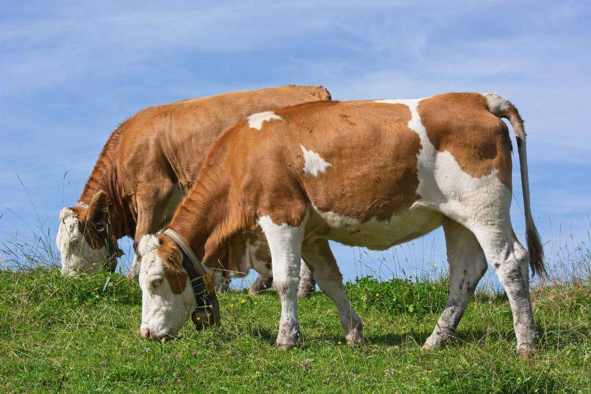
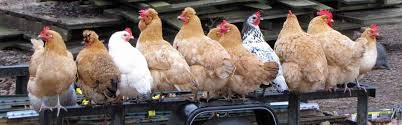

CLASSIFICATION OF FARM ANIMALS BY STOMARCH TYPES

-
A ruminant animal : is a type of mammal that has a unique digestive system capable of breaking
down plant-based food through a process called rumination. Ruminant animals have a stomach with
four compartments, allowing them to ferment and digest tough
plant materials efficiently. Examples of ruminant animals include cows, sheep, goats, and deer.
Characteristics of Ruminant Animals
-
Ruminant animals have a stomach that has four parts.
These parts are called the rumen, reticulum, omasum, and abomasum.
-
After they eat, they swallow their food, then bring it back up to chew it again.
This process is called chewing the cud.
-
Ruminants can break down and digest tough, fibrous plants like grass.
Their stomach helps them process these foods.
-
Ruminant animals mostly eat plants, especially grass, leaves, and other plant matter.
-
Digestion in ruminants takes longer because their food is chewed and digested in stages.

-
Non-ruminant animals : are those that don't have a specialized stomach with
multiple parts. They include animals like pigs, horses, and humans. They eat food, digest it once in a
single stomach, and extract nutrients from it without regurgitating and re-chewing.
Characteristics of Non-Ruminant Animals
-
Non-ruminant animals have a stomach with only one part or chamber.
-
Unlike ruminants, they do not bring food back up to chew it again.
They simply chew and swallow food once.
-
Non-ruminants find it harder to digest tough, fibrous plants like grass.
Their stomachs are not as efficient at breaking down these foods.
-
Non-ruminants can eat a variety of foods, including plants, grains, and even animal products.
-
Their digestion is quicker compared to ruminants because their stomach processes food faster.